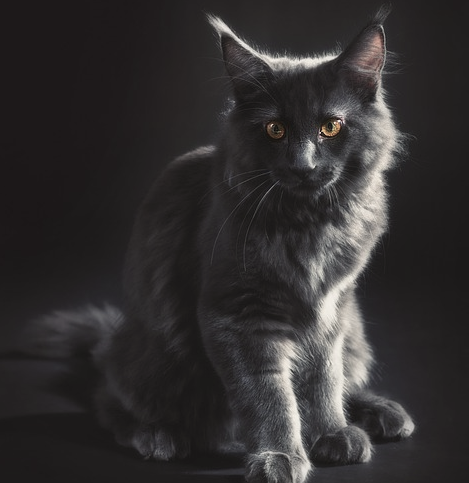
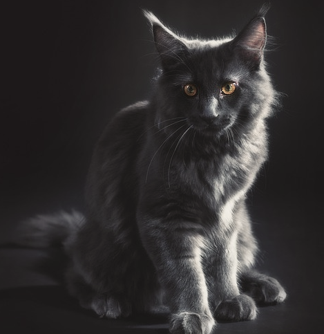

Питомцы
Все представители нашего питомника имеют ветеринарный паспорт с отметками о прививках и документ с родословной
- Коты
- Кошки
- Котята
 


Особенности породы
Мейн-Кун - это порода, которая вызывает к себе уважение. Приобретая в свой дом этого питомца, вы получите умное животное, которому нет равных

- Легко уживается в семьях с детьми или другими животными
- Внешний вид этой кошки похож на дикую рысь
- Выполняет команды как дрессированная собака
- Вес может достигать 12 кг, а длина 1 м
Почему именно мы?
Приобретая животное в нашем питомнике, вы получите
Бесплатное ветеринарное обслуживание 5 лет
Консультирование по любому вопросу 24 часа в сутки
Индивидуальный подбор питания для вашего кота